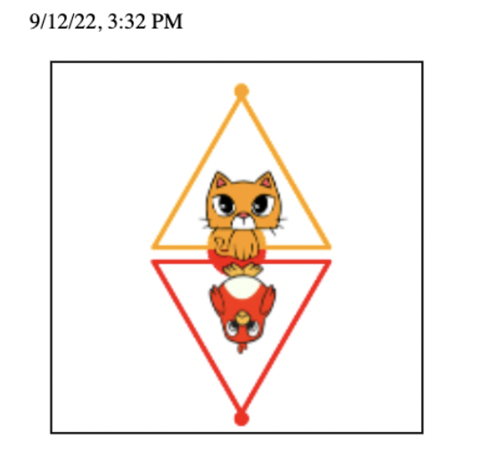

The part of the video when Randy was talking about the ETC Masters program really stuck with me. He says “None of that book learning stuff. Don and I have no patience for that book learning stuff…. All your time is spent in small teams making stuff.” I found that quite encouraging for a professor to say, because it’s a rather unorthodox way of approaching learning. I find that I actually love learning when it’s not confined by the construct of the school system. As soon as someone tells me I have to learn something, I immediately no longer want to learn it. It feels like this constant cycle of memorizing, testing, and forgetting. I do better when there's a purpose for what I’m learning, and I love what I’m learning. Likewise, small group projects are a medium that I thrive in. I love learning with my co-writer as we write our TV show scripts, and finding out poetic rhythm together. I’m also working on a passion-project TV show with a close friend of mine, and consequently many other friends. The relationships we have with one-another further our want to learn and better the project, because we want to give it our all for the other. I think relationships are on my mind, because Randy was all about them. I loved how he started by saying his wife and kids among other things are more important than his work. Throughout his talk he describes accomplishment after accomplishment, yet never really takes credit himself rather gives it to his mom, dad, family, teachers, mentors, friends, colleagues. His quote “And I’m going to keep having fun, every day I have left.” inspires me to take his positive mindset into the next brick walls I face.
This art work represents my idea of culture, because in this world there are cats and there are birds, literally.
Figuratively, it is representative because there are people (cats) that are always chasing others (birds) & sometimes
the cats eat the birds. #EatTheRich